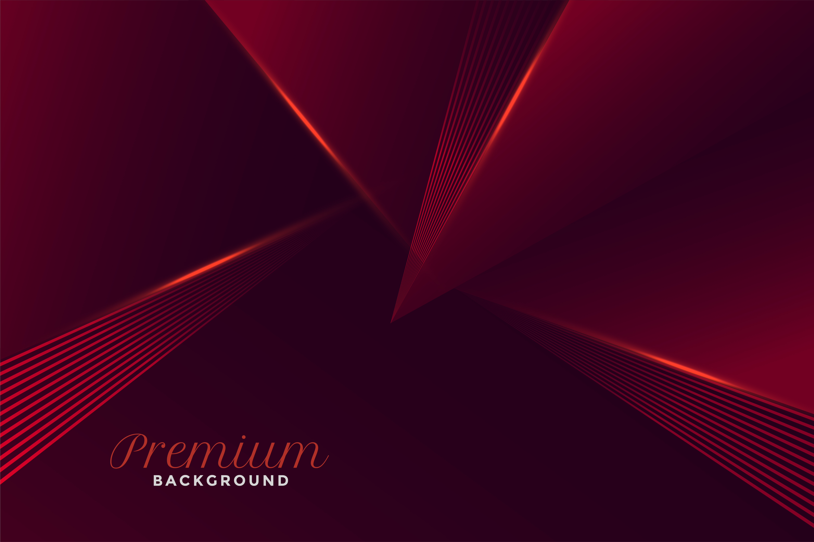

OUR COURSES
Complete Guitar Courses
From zero to confident. Covering everything you need step by step, with a clear path.
 Beginner
Beginner
Plucking Basic
Essential lessons starting from proper guitar handling to fingerstyle foundation and clean finger picking.
- Lesson 1: Correct seating and guitar posture (မှန်ကန်စွာ ထိုင်ပုံ ကိုင်ပုံ နင့် ကိုယ်ဟန်အနေအထား)
- Lesson 2: Left and right hand finger naming conventions (ဘယ်နှင့်ညာ လက်ချောင်းအမည်ခေါ်ဝေါ်ပုံ စံများ)
- Lesson 3: Guitar tuning fundamentals (Tuning ဆိုင်ရာ အခြေခံများ)
- Lesson 4: Fretboard navigation and finger placement (Fretboard ပေါ်တွင် သွားလာလှုပ်ရှားခြင်းနှင့် လက်ချောင်းနေရာချထားမှု)
- Lesson 5: Minimizing finger pain and tension (လက်ချောင်းနာကျင်မှုနှင့် Tention ကို အနည်းဆုံးဖြစ်အောင် လျှော့ချခြင်း)
- Lesson 6: Bass string plucking with thumb (လက်မဖြင့် ဘေ့စ်ကြိုးတီးခတ်ခြင်း နည်းစနစ်)
- Lesson 7: Utilizing index, middle, and ring fingers (i, m, a) (လက်ညိုး၊ လက်ခလယ်နှင့် လက်သန်းကြွယ်လက်ချောင်းများ အသုံးပြုခြင်း)
- Lesson 8: Basic arpeggio exercises (အခြေခံ Arpeggio လေ့ကျင့်ခန်းများ)
- Lesson 9: Tone control during string changes (ကြိုးပြောင်းချိန်တွင် အသံထွက်ကို ထိန်းချုပ်ခြင်း)
- Lesson 10: Advanced finger mobility drills (လက်ချောင်းများ ပိုမိုသွက်လက်လာစေရန် အကောင်းဆုံးလေ့ကျင့်ခန်းများ)
- Lesson 11: Playing with a single plucking pattern (တီးခတ်ပုံ ပုံစံတစ်မျိုးတည်းဖြင့် တီးခတ်ခြင်း)
- Lesson 12: Connecting two simple chords smoothly (ရိုးရှင်းသော ကော့ဒ်နှစ်ခုကို ချောမွေ့စွာ ပေါင်းစပ်တီးခတ်ခြင်း)
- Lesson 13: Introduction to melodic plucking (Melody ပါသော ပလပ်ကင်တီးခတ်ခြင်းသို့ မိတ်ဆက်)
- Lesson 14: Practicing song intros (intros များကို လေ့ကျင့်ခြင်း)
- Lesson 15: Playing your first complete simple song ( ပထမဆုံး ရိုးရှင်းသော သီချင်းတစ်ပုဒ်ကို အစအဆုံး တီးခတ်ခြင်း)
 Intermediate
Intermediate
Plucking Level 2
Advance your plucking technique and master more complex fretboard patterns and intricate arrangements.
- Lesson 1: Fluid chord shifting techniques (ချောမွေ့ပြေပြစ်သော Chord ရွှေ့ပြောင်းခြင်း နည်းစနစ်များ)
- Lesson 2: Finger muscle flexibility exercises (လက်ချောင်းကြွက်သားများ ပျော့ပြောင်းစေရန် လေ့ကျင့်ခန်းများ)
- Lesson 3: Barre chords plucking integration (Barre Chords များဖြင့် ပလပ်ကင်တီးခတ်မှုကို ပေါင်းစပ်ခြင်း)
- Lesson 4: Independent thumb and finger coordination (လက်မနှင့် အခြားလက်ချောင်းများ လွတ်လပ်စွာ လှုပ်ရှားနိုင်ခြင်း)
- Lesson 5: Eliminating gaps during transitions (Sound Bug များကို ဖယ်ရှားခြင်း)
- Lesson 6: Complex arpeggio variations (ရှုပ်ထွေးသော Arpeggio ပုံစံကွဲများ)
- Lesson 7: Rhythm division and speed scaling (စည်းချက်ခွဲဝေမှုနှင့် အမြန်နှုန်း အတိုင်းအတာသတ်မှတ်ခြင်း)
- Lesson 8: Dynamics and touch control (အသံအနှိမ်အမြင့်နှင့် လက်ဖျားထိတွေ့မှု ထိန်းချုပ်ခြင်း)
- Lesson 9: Accentuated basslines (ဘေ့စ်ကြိုးသံများကို ပိုမိုပေါ်လွင်စေခြင်း)
- Lesson 10: Velocity and attack regulation (တီးခတ်သည့် အရှိန်နှင့် Attack ကို ထိန်းညှိခြင်း)
- Lesson 11: Popular song intro styling (နာမည်ကြီး သီချင်း intro များကို stylingလုပ်ခြင်း)
- Lesson 12: Advanced chorus picking patterns ( အဆင့်မြင့် Picking တီးခတ်ပုံများ)
- Lesson 13: Outro execution techniques (သီချင်းအဆုံးသတ် တီးခတ်သည့် နည်းပညာများ)
- Lesson 14: Infusing emotion into performance (တီးခတ်မှုတွင် ခံစားချက်အပြည့် ထည့်သွင်းခြင်း)
- Lesson 15: Flawless full-track fingerstyle performance ( သီချင်းတစ်ပုဒ်လုံး ဖျော်ဖြေတင်ဆက်မှု)

BeginnerRhythm Basic
Master rhythmic fundamentals so you can lock in with the beat and enjoy playing songs effortlessly.
- Lesson 1: Proper pick grip and handling (Pick ကို မှန်ကန်စွာ ကိုင်တွယ်ပုံ)
- Lesson 2: Wrist motion foundations (လက်ကောက်ဝတ် လှုပ်ရှားမှု အခြေခံများ)
- Lesson 3: Basic down-strum execution (Down တီးခတ်သည့် အခြေခံပုံစံ)
- Lesson 4: Down and up strum integration (Down Up တီးခတ်မှုများကို ပေါင်းစပ်ခြင်း)
- Lesson 5: Relaxing arm tension (လက်မောင်းကြွက်သား Tension ကို လျှော့ချခြင်း)
- Lesson 6: Standard 4/4 rhythm strumming (စံနှုန်း 4/4 Timming ဖြင့် တီးခတ်ခြင်း)
- Lesson 7: Slow ballad rhythm patterns (သီချင်းနှေး Ballad စည်းချက် ပုံစံများ)
- Lesson 8: Fast tempo hand control (အမြန်နှုန်းမြင့်သော တေးသွားများအတွက် လက်ကို ထိန်းချုပ်ခြင်း)
- Lesson 9: Metronome synchronization drills (Metronome နှင့်အညီ လေ့ကျင့်ခြင်း)
- Lesson 10: Internalizing varied time feels (ကွဲပြားခြားနားသော time feeling များကို မှတ်မိအောင်လုပ်ခြင်း)
- Lesson 11: Playing with simple chord changes (ရိုးရှင်းသော ကော့ဒ်ပြောင်းလဲမှုများနှင့်အတူ တီးခတ်ခြင်း)
- Lesson 12: Verse and Chorus structure strumming (Verse Pre Cho များအလိုက် Strum ခတ်ခြင်း)
- Lesson 13: Maintaining steady rhythm across transitions (ကော့ဒ်ပြောင်းချိန်များတွင် စည်းချက် မယိုင်ဘဲ တသမတ်တည်း ထိန်းသိမ်းခြင်း)
- Lesson 14: Dynamic section shifts (သီချင်း အပိုင်းအခြားအလိုက် ပြောင်းလဲခြင်း)
- Lesson 15: Full track execution with rhythm (စည်းချက်အပြည့်အစုံဖြင့် သီချင်းတစ်ပုဒ်လုံး တီးခတ်ခြင်း)
Intermediate
Rhythm Intermediate
Explore dynamic rhythmic variations and advanced grooves required for modern music production.
- Lesson 1: Off-beat strumming mastery (စည်းချက်လွဲ တီးခတ်မှုကို ကျွမ်းကျင်ပိုင်နိုင်ခြင်း)
- Lesson 2: Specialized rock and pop patterns (ရော့ခ်နှင့် ပော့ပ် သီချင်းပုံစံ အထူးပြုများ)
- Lesson 3: Deconstructing complex time feels (ရှုပ်ထွေးသော စည်းချက်ခံစားမှုများကို ခွဲခြမ်းစိတ်ဖြာခြင်း)
- Lesson 4: Hybrid finger and pick strumming (လက်ချောင်းနှင့် ပစ်ခ်ကို တွဲဖက်တီးခတ်ခြင်း)
- Lesson 5: Applying syncopation in context (စည်းချက်လွဲစနစ်ကို သီချင်းအခြေအနေအလိုက် အသုံးပြုခြင်း)
- Lesson 6: Palm muting texture creation (လက်ဖဝါးဖြင့် အသံတိတ်ဆိတ်ကာ ကြမ်းပြင်သံဖန်တီးခြင်း)
- Lesson 7: Dead notes and percussive chops (အသံမထွက်သော နုတ်များနှင့် တူရိယာကဲ့သို့ ထိချက်များ)
- Lesson 8: Left-hand muting precision (ဘယ်လက်ဖြင့် အသံတိတ်ဆိတ်စေသည့် တိကျမှု)
- Lesson 9: Cleaning up string noise (ကြိုးပွတ်တိုက်သံ မလိုအပ်သည်များကို ဖယ်ရှားရှင်းလင်းခြင်း)
- Lesson 10: Breathing life with percussive strumming (တူရိယာသံစပ် တီးခတ်မှုဖြင့် သီချင်းကို အသက်ဝင်စေခြင်း)
- Lesson 11: Combining multiple rhythm styles (စည်းချက်စတိုင်အမျိုးမျိုးကို ပေါင်းစပ်ခြင်း)
- Lesson 12: Crafting modern rhythm arrangements (ခေတ်မီ စည်းချက်တီးခတ်ပုံများကို စီစဉ်ဖန်တီးခြင်း)
- Lesson 13: Multi-tempo practice drills (အမြန်နှုန်း အမျိုးမျိုးဖြင့် လေ့ကျင့်ခန်းလုပ်ခြင်း)
- Lesson 14: Stage rhythm preparation (စင်တင်ဖျော်ဖြေရန် စည်းချက်ပိုင်းဆိုင်ရာ ပြင်ဆင်မှု)
- Lesson 15: Comprehensive intermediate rhythm performance (အလယ်အလတ်အဆင့် စည်းချက် ဖျော်ဖြေတင်ဆက်မှု အပြည့်အစုံ)
Advanced
Advanced Rhythm
Tackle complex time signatures and master professional-grade groove mechanics like top tier players.
- Lesson 1: Navigating 5/4 and 7/8 meters (5/4 နှင့် 7/8 စည်းချက်မီတာများကို ကျွမ်းကျင်စွာ တီးခတ်ခြင်း)
- Lesson 2: Unconventional groove placement (ထုံးစံမဟုတ်သော ဂร့ูဗ်နေရာချထားမှုများ)
- Lesson 3: Polyrhythms core concepts (စည်းချက်စုံ (Polyrhythms) အခြေခံသဘောတရားများ)
- Lesson 4: Simplified odd-meter drills (မညီညာသော စည်းချက်မီတာ လေ့ကျင့်ခန်းများကို ရိုးရှင်းစေခြင်း)
- Lesson 5: Seamless meter transitions (မီတာပြောင်းလဲမှုများကို ချောမွေ့စွာ ဆက်စပ်ခြင်း)
- Lesson 6: Developing your signature pocket (သင့်ကိုယ်ပိုင် စတိုင်လ်ကျသော ပေါက်ကက် (Pocket) ကို တည်ဆောက်ခြင်း)
- Lesson 7: Avoiding overplaying and managing density (တီးခတ်မှု မလွန်ကဲစေရန်နှင့် အသံထုထည်ကို ထိန်းသိမ်းခြင်း)
- Lesson 8: Volume and velocity control (အသံပမာဏနှင့် အရှိန်အဟုန်ကို ထိန်းချုပ်ခြင်း)
- Lesson 9: Professional performance standards (ပညာရှင်အဆင့် ဖျော်ဖြေမှု စံနှုန်းများ)
- Lesson 10: Sustaining rock-solid tempo stability (ခိုင်မာသော တမ်ပို အမြန်နှုန်း တည်ငြိမ်မှုကို ထိန်းသိမ်းခြင်း)
- Lesson 11: Error-free live execution exercises (ဖျော်ဖြေပွဲများတွင် အမှားအယွင်းကင်းစွာ တီးခတ်ရန် လေ့ကျင့်ခြင်း)
- Lesson 12: Locking rhythm with a full band (တူရိယာအဖွဲ့လိုက် စည်းချက်ကို တိကျစွာ ကိုက်ညီစေခြင်း)
- Lesson 13: Preparing complex charts for the stage (စင်တင်ဖျော်ဖြေရန် ရှုပ်ထွေးသော တေးဂီတဇယားများကို ပြင်ဆင်ခြင်း)
- Lesson 14: Maintaining time during open improvisation (လွတ်လပ်စွာ တီထွင်တီးခတ်စဉ် (Improvisation) အချိန်ကို တိကျစွာ ထိန်းသိမ်းခြင်း)
- Lesson 15: Advanced rhythm grand finale performance (အဆင့်မြင့် စည်းချက် ဖျော်ဖြေတင်ဆက်မှု အထူးပွဲ)
Fingerstyle Basic
Learn to play primary melodies and rich basslines simultaneously using fingerstyle guitar technique.
- Lesson 1: Fingerstyle roles and independence (ဖင်ဂာစတိုင် လက်ချောင်းများ၏ တာဝန်များနှင့် လွတ်လပ်စွာ လှုပ်ရှားနိုင်မှု)
- Lesson 2: Right-hand nail care and attack angle (ညာလက်သည်း ထိန်းသိမ်းမှုနှင့် ကြိုးထိတွေ့သည့် ထောင့်မှန်)
- Lesson 3: Finger-specific isolation drills (လက်ချောင်းတစ်ချောင်းချင်းစီ သီးသန့်လေ့ကျင့်ခန်းများ)
- Lesson 4: Left and right-hand synchronization (ဘယ်လက်နှင့် ညာလက် ညီညာစွာ အလုပ်လုပ်ခြင်း)
- Lesson 5: Proper right-hand resting positions (ညာလက်ကို မှန်ကန်စွာ အနားပေးသည့် နေရာချထားမှု)
- Lesson 6: Independent thumb bass control (လက်မဖြင့် ဘေ့စ်ကြိုးကို လွတ်လပ်စွာ ထိန်းချုပ်ခြင်း)
- Lesson 7: Integrating melody with supporting fingers (အထောက်အကူပြု လက်ချောင်းများဖြင့် တေးသွားကို ပေါင်းစပ်ခြင်း)
- Lesson 8: Overcoming simultaneous bass & melody hurdles (ဘေ့စ်နှင့် တေးသွား တစ်ပြိုင်နက်တီးခတ်ရာတွင် ကြုံရသည့် အခက်အခဲများကို ကျော်လွှားခြင်း)
- Lesson 9: Locking timing across voices (အသံပိုင်းဆိုင်ရာ အချိန်ကိုက်မှုကို တိကျစွာ ကိုက်ညီစေခြင်း)
- Lesson 10: Bassline precision training (ဘေ့စ်သံ တိကျမှန်ကန်စေရန် လေ့ကျင့်ခြင်း)
- Lesson 11: Playing classic beginner fingerstyle pieces (အစပြုသူများအတွက် ရှေးဟောင်း ဂန္ထဝင် ဖင်ဂာစတိုင် တေးသွားများကို တီးခတ်ခြင်း)
- Lesson 12: Section-by-section song breakdown (သီချင်းတစ်ပုဒ်ကို အပိုင်းလိုက် ခွဲခြမ်းစိတ်ဖြာ လေ့လာခြင်း)
- Lesson 13: Outro styling in fingerstyle (ဖင်ဂာစတိုင်ဖြင့် သီချင်းအဆုံးသတ် စတိုင်ဖော်ခြင်း)
- Lesson 14: Adding emotional expression (ခံစားချက် အနုအညာများကို ထည့်သွင်းခြင်း)
- Lesson 15: Performing a complete fingerstyle track (ဖင်ဂာစတိုင် သီချင်းတစ်ပုဒ်လုံးကို အစအဆုံး တီးခတ်ဖျော်ဖြေခြင်း)
Beginner
Basic Music Theory
Master essential music theory and fretboard notes required to deeply understand your instrument.
- Lesson 1: Locating natural notes on the fretboard (ဖရက်ဘုတ်ပေါ်တွင် သဘာဝ နုတ်များကို ရှာဖွေခြင်း)
- Lesson 2: Understanding sharps (#) and flats (b) (ရှပ် (#) နှင့် ဖလက် (b) များကို နားလည်ခြင်း)
- Lesson 3: Memorization shortcuts for the neck (ဂီတာလည်ပင်းပေါ်ရှိ နုတ်များကို အလွယ်တကူ မှတ်မိစေမည့် နည်းလမ်းများ)
- Lesson 4: Interval distance fundamentals (အင်တာဗယ် (Interval) အကွာအဝေး အခြေခံများ)
- Lesson 5: Fretboard octave mapping (ဖရက်ဘုတ်ပေါ်တွင် အောက်တေ့ဗ် (Octave) နေရာချထားပုံ ဖော်ပ်များ)
- Lesson 6: Major scale formula and structure (မေဂျာစကေး ဖော်မြူလာနှင့် တည်ဆောက်ပုံ)
- Lesson 7: Minor scale differences (မိုင်းနာစကေး၏ ကွဲပြားချက်များ)
- Lesson 8: Practicing scale shapes across the neck (ဖရက်ဘုတ်တစ်လျှောက် စကေးပုံစံများကို လေ့ကျင့်ခြင်း)
- Lesson 9: Pentatonic scale introduction (ပင်တာတိုနစ်စကေး မိတ်ဆက်)
- Lesson 10: Scale degree numbering systems (စကေးဒီဂရီ ဂဏန်းသတ်မှတ်ခြင်း စနစ်များ)
- Lesson 11: Triads and major/minor chords (ထရိုင်ယာ့ဒ်များ နှင့် မေဂျာ/မိုင်းနာ ကော့ဒ်များ)
- Lesson 12: Deconstructing chord formulas (ကော့ဒ်ဖော်မြူလာများကို ခွဲခြမ်းလေ့လာခြင်း)
- Lesson 13: Crafting original chord voicings (ကိုယ်ပိုင် ကော့ဒ်အသံထွက်အသစ်များ တည်ဆောက်ခြင်း)
- Lesson 14: Mathematical chord calculation (သင်္ချာနည်းကျ ကော့ဒ်တွက်ချက်ခြင်း)
- Lesson 15: Applying theory to real-world playing (သီအိုရီများကို လက်တွေ့တီးခတ်မှုတွင် အသုံးချခြင်း)
Intermediate
Intermediate Music Theory
Dive deeper into harmonic analysis, chord progressions, and advanced song composition structures.
- Lesson 1: Identifying song keys instantly (သီချင်းတစ်ပုဒ်၏ ကီးကို ချက်ချင်းခွဲခြားသိရှိခြင်း)
- Lesson 2: Analyzing popular chord progressions (နာမည်ကြီး ကော့ဒ်တန်းဆက်များကို ခွဲခြမ်းစိတ်ဖြာခြင်း)
- Lesson 3: Transposition techniques (ကီးပြောင်းတီးခတ်သည့် နည်းပညာများ)
- Lesson 4: Circle of Fifths mastery (ဆာကယ်အော့ဖ်ဖิဖ်သ် (Circle of Fifths) ကို ကျွမ်းကျင်ပိုင်နိုင်ခြင်း)
- Lesson 5: Diatonic chord generation (ဒိုင်ယာတိုးနစ် ကော့ဒ်များ ထုတ်လုပ်ဖန်တီးခြင်း)
- Lesson 6: Advanced interval ear training (အဆင့်မြင့် အင်တာဗယ် နားဖြင့် နားထောင်လေ့ကျင့်ခြင်း)
- Lesson 7: Practical application of scale modes (စကေးမုဒ်များကို လက်တွေ့အသုံးပြုခြင်း)
- Lesson 8: Melodic modes deep dive (တေးသွားဆိုင်ရာ မုဒ်များကို အသေးစိတ်လေ့လာခြင်း)
- Lesson 9: Using modes for improvisation (တေးသွားသစ် တီထွင်တီးခတ်ရန် မုဒ်များကို အသုံးပြုခြင်း)
- Lesson 10: Interval-based melodic phrasing (အင်တာဗယ်အပေါ် အခြေခံသော တေးသွားဖရေ့စင်းများ)
- Lesson 11: Applying theory in original songwriting (ကိုယ်ပိုင်သီချင်းရေးစပ်ရာတွင် သီအိုရီများကို အသုံးချခြင်း)
- Lesson 12: Structural song analysis (သီချင်းဖွဲ့စည်းပုံကို ခွဲခြမ်းလေ့လာခြင်း)
- Lesson 13: Building advanced chord extensions (အဆင့်မြင့် ကော့ဒ်အပိုဆက်စပ်မှုများ တည်ဆောက်ခြင်း)
- Lesson 14: Selecting progressions by genre (ဂီတအမျိုးအစားအလိုက် ကော့ဒ်တန်းဆက်များ ရွေးချယ်ခြင်း)
- Lesson 15: Complete theory integration into performance (သီအိုရီများကို ဖျော်ဖြေတင်ဆက်မှုတွင် အပြည့်အစုံ ပေါင်းစပ်အသုံးပြုခြင်း)